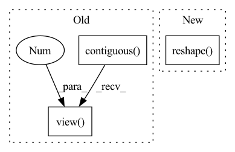

Pattern ID :2327

Before Change
weight = weight * norm.view(B, oC, 1, 1, 1)
out = F.conv2d(
x.contiguous().view(1, B*iC, H, W), weight.view(B*oC, iC, kH, kW),
stride=self.stride, padding=self.padding, groups=B
)
_, _, H, W = out.size()
out = out.view(B, -1, H, W)
return out
class Bias(nn.Module):
def __init__(self, out_channels, bias_init=0, lr=1.):
After Change
weight = weight * d
// reshaping for conv input
x = x.reshape(1, -1, H, W)
_, _, *ws = weight.size()
weight = weight.reshape(B*self.out_channels, *ws)
pad = self._get_same_padding(H)
In pattern: SUPERPATTERN
Frequency: 3
Non-data size: 3
Instances
Fragment ID: 14343818
Project Name: stomoya/animeface
Commit Name: b3652bae109c713da926d5532eb014b02135da52
Time: 2020-12-14
Author: blackie0110@gmail.com
File Name: implementations/StyleGAN2/model.py
M Class Name: EqualizedModulatedConv2d
N Class Name: ModulatedConv2d
M Method Name: forward(3)
N Method Name: forward(3)
M Parent Class: nn.Module
N Parent Class: nn.Module
M File Name: implementations/StyleGAN2/model.py
N File Name: implementations/StyleGAN2/model.py
M Start Line: 71
M End Line: 87
N Start Line: 109
N End Line: 131
'>
Before Change
-1) // shape=(batch_size, seq_len, hidden_size*interest_num)
item_eb_hat = item_eb_hat.view(-1, self.seq_len, self.interest_num, self.hidden_size)
item_eb_hat = item_eb_hat.permute(0, 2, 1, 3).contiguous()
item_eb_hat = item_eb_hat.view(-1, self.interest_num, self.seq_len,
self.hidden_size) // [batch_size, num_interest, seq_len, hidden_size]
// [batch_size, num_interest, seq_len, hidden_size]
if self.stop_grad: // Clip signal for backpropagation, item_emb_hat is not included in gradient calculation
After Change
item_eb_hat = torch.sum(self.w[:, :self.seq_len, :, :] * u,
dim=3) // shape=(batch_size, maxlen, hidden_size*interest_num)
item_eb_hat = torch.reshape(item_eb_hat, (-1, self.seq_len, self.interest_num, self.hidden_size))
item_eb_hat = torch.transpose(item_eb_hat, 1, 2).contiguous()
item_eb_hat = torch.reshape(item_eb_hat, (-1, self.interest_num, self.seq_len, self.hidden_size))
// [b, in, s, h]
'>
Fragment ID: 14343817
Project Name: hasai666/rec_pangu
Commit Name: edb52c9a2e35045250d5fda164df336768f37599
Time: 2023-03-24
Author: wangkai@fuzhi.ai
File Name: rec_pangu/models/layers/multi_interest.py
M Class Name: CapsuleNetwork
N Class Name: CapsuleNetwork
M Method Name: forward(4)
N Method Name: forward(4)
M Parent Class: nn.Module
N Parent Class: nn.Module
M File Name: rec_pangu/models/layers/multi_interest.py
N File Name: rec_pangu/models/layers/multi_interest.py
M Start Line: 102
M End Line: 172
N Start Line: 94
N End Line: 154
'>
Before Change
A = A.view(N, 1, ord_num * H * W)
B = B.view(N, 1, ord_num * H * W)
concat_feats = torch.cat((A, B), dim=1).contiguous()
if self.training:
ord_prob = F.log_softmax(concat_feats, dim=1)
return ord_prob.view(-1, ord_num, H, W)
ord_prob = F.softmax(C, dim=1)[:, 1, ::]
ord_prob = ord_prob.view(-1, ord_num, H, W)
ord_label = torch.sum((ord_prob > 0.5), dim=1).view(-1, 1, H, W)
After Change
return ord_prob
ord_prob = F.softmax(concat_feats, dim=1)[:, 0, ::]
ord_label = torch.sum((ord_prob > 0.5), dim=1).reshape((N, 1, H, W))
return ord_prob, ord_label
'>
Fragment ID: 14343823
Project Name: dontlovebugs/superviseddepthprediction
Commit Name: 07fe1714fc568b25bd80debe8dd3ab800ff576a8
Time: 2020-05-02
Author: wangxin_buaa@163.com
File Name: dp/modules/decoders/OrdinalRegression.py
M Class Name: OrdinalRegressionLayer
N Class Name: OrdinalRegressionLayer
M Method Name: forward(2)
N Method Name: forward(2)
M Parent Class: nn.Module
N Parent Class: nn.Module
M File Name: dp/modules/decoders/OrdinalRegression.py
N File Name: dp/modules/decoders/OrdinalRegression.py
M Start Line: 26
M End Line: 41
N Start Line: 28
N End Line: 45